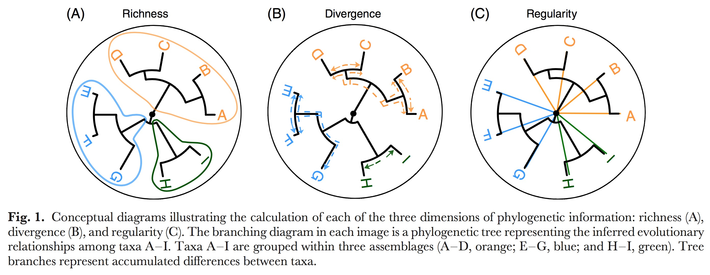
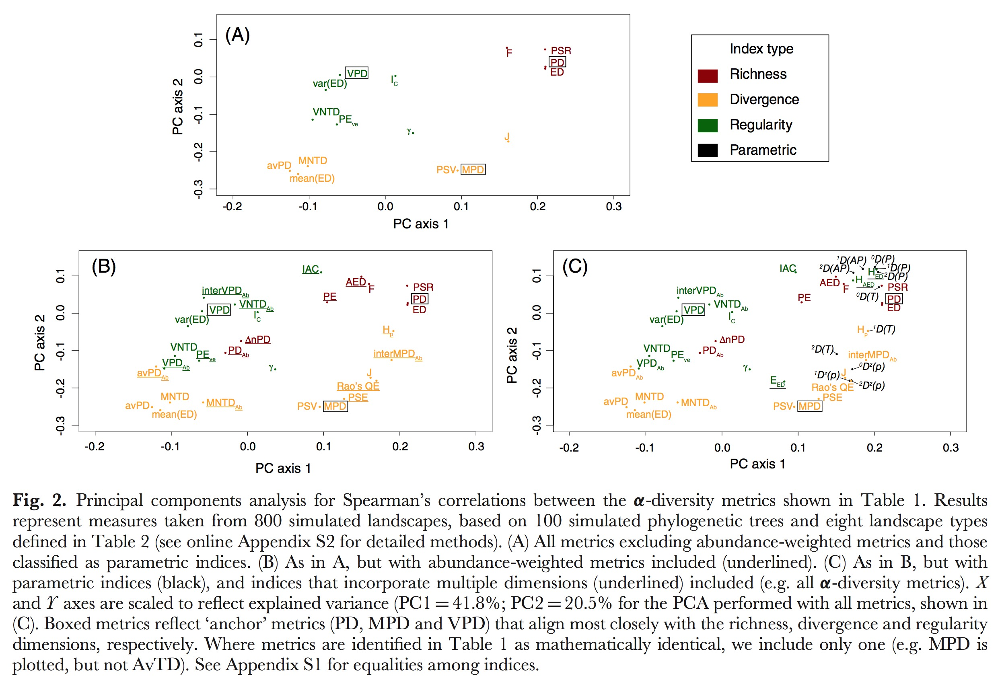
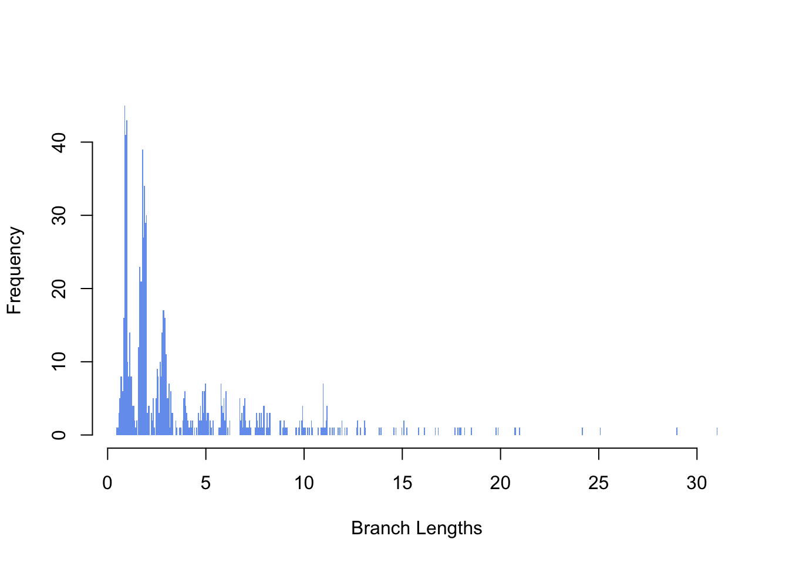
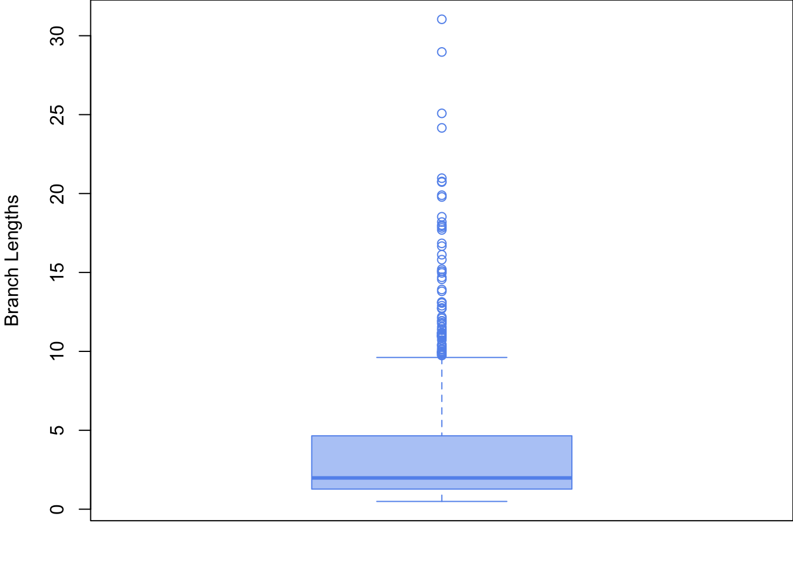

Chapter 5 Module 2: Space and phylogeny summary statistics
This is the master document for Module 2, a foundational function in our FARM package that analyzes results from Module 1, the other foundational function. Module 1 simulates a spatial pattern and a phylogenetic tree given a set of environmental and inheritance rules and then Module 2 summarizes those simulated results using a large set of targeted summary statistics. Here we describe our choice of summary statistics, justify those choices as part of a larger theoretical context, and provide our reproducable code for executing the anaylses yourself. These two parts are seperated into modules so that they can act independently. An combination of spatial pattern and associated phylogeny many be used as long as they are formatted correctly.
This pipeline was designed to analyze a simulated world where all the information is known about both the world and the tree. There is no missing information, just extinct trees. This is much different than our real tree that has loads of uncertainty unevenly destributed across it. The result you see demonstrated right now are one simulated result of many. I need to do a sister page to this were we do this entire analysis on the real tree, or best real tree we’ve got.
We have four types of data available for asking research questions using D-place data: phylogenies, spatial locations, trait identities, and environmental reconstructions. Any one of these four data types alone are relatively information poor, so we are searching for ways to model connections between these data types to draw stronger conclusions overall.
Other modules can use the summary statistics generated from this module to test hypotheses. We currently have a ABC and Random Forest module started but there will be more to come.
These are quantitative connections that we are assumed in the analyses, but we don’t actually have any support in the data for doing so. 1. nearest neighbor connectivity measures 2. Abundance estimates 3. Pairwise influence (history) between cultures. 4. Environmental reconstruction validation evidence
5.1 Phylogenetic summary statistics
Whole tree vs. part of tree? These statistics are generally used to compare one sample to another. For example, an experimental contrast between two sites, two phylogenetic groups, or two communities in two different locations. Here we are calculating these statistics for the global langauage tree to compare against global trees created in our simulation. You still retain the ability to subset this tree or others and send only those subsets through this code to compare the values with each other afterwards.
- Introduction and framework
- Alpha Diversity metrics
- Branch Length (richness and divergence)
- Pairwise distance between tips (richness, divergence, and regularity)
- Phylogenetic isolation (divergence, and regularity)
- Nearest Neighbor (divergence, and regularity)
All trees are ultrametric.
5.1.1 Introduction and framework
The choice of phylogenetic analyses and organizational scheme is based on the suggestions of Tucker et al. (2016). Here are a few images from that paper for an overview:
 
From Tucker et al. (2016)
From Tucker et al. (2016)
library(knitr)
library(phytools)## Loading required package: ape##
## Attaching package: 'ape'## The following object is masked from 'package:spdep':
##
## plot.mst##
## Attaching package: 'phytools'## The following object is masked from 'package:Matrix':
##
## expm## The following object is masked from 'package:FARM':
##
## bdlibrary(FARM)
library(ROCR)## Loading required package: gplots##
## Attaching package: 'gplots'## The following object is masked from 'package:stats':
##
## lowesslibrary(spdep)load('~/Downloads/download.Rdata')
this_tree <- myOut$mytree
this_world <- myOut$myWorldstr(this_world)## 'data.frame': 1253 obs. of 8 variables:
## $ cellID : num 1 2 3 4 5 6 7 8 9 10 ...
## $ Longitude : num -60 12 28 -124 -63 ...
## $ Latitude : num -25 10 -29 54 4 ...
## $ Parent : num 828 NA 216 616 901 NA NA NA NA NA ...
## $ BirthT : num 37.8 NA 37.6 31 36.2 ...
## $ Trait : num 1 NA 1 1 1 NA NA NA NA NA ...
## $ Environment: num 2 2 2 1 2 1 2 1 1 1 ...
## $ TipLabel : chr "t1" "t2" "t3" "t4" ...str(this_tree)## List of 4
## $ edge : num [1:910, 1:2] 457 460 463 560 892 892 560 463 466 466 ...
## $ tip.label : chr [1:456] "t862" "t409" "t260" "t204" ...
## $ edge.length: num [1:910] 2.667 4.433 20.973 10.011 0.916 ...
## $ Nnode : num 455
## - attr(*, "class")= chr "phylo"
## - attr(*, "order")= chr "cladewise"5.1.2 Alpha diversity metrics
5.1.2.1 Branch Lengths
Branch length data is embedded in the tree object provided to this function. The first step in summarizing the lengths is to extract those data from the tree object. These data are called ‘edges’ in the tree object. We extract branch lengths and create an object called ‘Branch_lengths’ for passing on to the other summary functions. The histogram below shows the frequency of different branch lengths found throughout the tree.
Branch_Lengths <- this_tree$edge.length We can summarize branch lengths according to normal summary statistics, but it can be difficult to assign evolutionary meaning to some of these metrics and so they are not regularly used as best I can tell. This lack of meaning does not mean that these statistics couldn’t be used to distinguish between large simulated trees.
mean_branch_length <- mean(Branch_Lengths)
variance_branch_length <- var(Branch_Lengths)
SD_branch_length <- sd(Branch_Lengths)## [1] "mean branch length = 3.64753764473253"## [1] "variance in branch lengths = 14.9947769344804"## [1] "standard deviation in branch lengths = 3.87230899263998"
5.1.2.2 Phylogenetic diversity (\(PD\))
Phylogenetic diversity (\(PD\)) is the summation (\(\sum\)) of all branch lengths connecting species together, where \(B_{t}\) is the set of included tips and \(L_{b}\) is Branch lengths (Faith 1992). This is an anchor test, which means it is regularly used, well understood, and we should use it to anchor our work to past work. PD is a richness measure, it tells us how much evolutionary history is associated with a set of tips.
\[PD = \sum_{b \in B_{t}}^{}L_{b}\]
# Anchor test = PD (Faith's phylogenetic diversity)
Pylo_diversity_is_sum_of_BL <- sum(Branch_Lengths)
Pylo_diversity_is_sum_of_BL## [1] 3319.259There are variations on this measure that we have NOT implemented here. It is popular to scale this measure according to some ecological driver. Barker (2002) scales branch lengths (\(L_{b}\)) by multiplying them against the abundance of individuals at at tip (\(A_{b}\)). Others (D. F. Rosauer et al. 2009), scale them by their range size instead (\(R_{b}\)).
\[\Delta n PD = \sum_{b \in B_{t}}^{}A_{b}L_{b}\] \[PE = \sum_{b \in B_{t}}^{}\dfrac{L_{b}}{R_{b}}\] Argueing that proportional abundance phylogenetic diversity (\(PD_{Ab}\)) is more effective than the standard PD calculated from raw abundance, Vellend et al. (2011) penned a new version of PD where \(B\) is the total number of branch lengths (\(L_{b}\)). Note: We don’t have abundance data right now for the human project so this metric is not currently very helpful.
\[PD_{Ab} = B * \dfrac{\sum_{b \in B_{t}}^{}A_{b}L_{b}}{\sum_{b \in B_{t}}^{}A_{b}}\]
#Calculate B
number_of_branches <- length(Branch_Lengths)
number_of_branches## [1] 9105.1.2.3 Average phylogenetic diversity (\(avPD\))
Average phylogenetic diversity (\(avPD\)) (Clarke and Warwick 2001) is a branch length-based divergence indices where PD is divided by the total number of tips (\(S\)) in the tree. \[avPD = \dfrac{PD}{S}\]
Number_of_tips <- length(this_tree$tip.label)
average_phylogenetic_diversity <- Pylo_diversity_is_sum_of_BL / Number_of_tips
average_phylogenetic_diversity## [1] 7.279077There is also a proportional abundance version of average phylogenetic diversity (\(avPD_{Ab}\)) (Tucker et al. 2016). Again, we don’t have abundance values yet for D-place. \[avPD_{Ab} = \dfrac{B * \dfrac{\sum_{b \in B_{t}}^{}A_{b}L_{b}}{\sum_{b \in B_{t}}^{}A_{b}}}{S}\]
5.1.3 Pairwise distance between tips
This is the patristic distance, the sum of the branch lengths following the shortest distance between two tips in a tree, implemented as a distance matrix where every tip is compared to every other tip. This distance function can be anything. We use euclidean and environmental distance matrices heavily in the spatial analyses.
5.1.3.1 Calculate the patristic distance between two taxa, for all taxa
Calculate the patristic distance between two taxa using the R package ‘phytools’, this function takes a ‘phylo’ tree object and returns a distance matrix between tips. Need original citation.
## Pairwise distance between tips - From library(ape) in library(phytools)
Pairwise_dist <- cophenetic(this_tree)yields a distance matrix (list of 2D matrices) of all distances between taxa.
## num [1:456, 1:456] 0 57.9 78 57.9 72.7 ...
## - attr(*, "dimnames")=List of 2
## ..$ : chr [1:456] "t862" "t409" "t260" "t204" ...
## ..$ : chr [1:456] "t862" "t409" "t260" "t204" ...5.1.3.2 Sum of all pairwise distances (\(F\))
Now we can use a set of summary statistics to describe those pairwise distances. The sum of all pairwise distances, \(F\), is formally called ‘Extensive quadratic entropy’. (Izsak and Papp 2000). Just as it was with branch lengths, this is a richness measure and, accordingly, should be used to answer richness questions.
\[F = \sum_{i} \sum_{j} d_{ij}\]
# F -- Extensive quadratic entropy
F_quadratic_entropy_is_sum_of_PD <- sum(Pairwise_dist)
F_quadratic_entropy_is_sum_of_PD## [1] 140473515.1.3.3 Mean pairwise distance (MPD)
Mean inter-species distances. The mean of all pairwise distances, \(MPD\) (a.k.a. \(AvTD\), and \(\Delta^{+}\)), is the mean distance between species. (Clarke and Warwick 1998; Webb et al. 2002; Webb, Ackerly, and Kembel 2008; Kembel et al. 2010). \[MPD = \dfrac{\sum_{ij} d_{ij}}{S(S-1)}\]
# Anchor test = MPD (mean pairwise distance)
Mean_pairwise_distance <-
Pairwise_dist / (Number_of_tips * (Number_of_tips - 1) ) ## num [1:456, 1:456] 0 0.000279 0.000376 0.000279 0.00035 ...
## - attr(*, "dimnames")=List of 2
## ..$ : chr [1:456] "t862" "t409" "t260" "t204" ...
## ..$ : chr [1:456] "t862" "t409" "t260" "t204" ...5.1.3.4 MPD anchored to the root
There is an extention to mean pairwise distance calculations from Helmus et al. (2010) called \(PSV\), \(PSR\), and \(PSE\), phylogenetic species variability, phylogenetic species richness, and phylogenetic species evenness. These measures take the basic pairwise distance calculations and anchor them to the root of the tree so distances have a common denominator. This extention is implemented by using the same equations, just with a constrained set of \(d_{ij}\) conditions. Specifically,
\[PSV = MPD = \dfrac{\sum_{ij} d_{ij}}{S(S-1)}\] \[PSR = \sum_{i} {(\dfrac{1}{S-1} \sum_{j} {d_{ij}})}\] \[PSE = \dfrac{S}{S-1} \sum_{ij} d_{ij}p_{i}p_{j}\]
with these specific values of \(d_{ij}\)
\[ d_{ji}=0.5*(c_{ii} + c_{jj} - c_{ij}) \\ \ \\ or \\ \ \\ d_{ij} = 1 - c_{ij} / (\sqrt{c_{ii}c_{jj}}) \] and \[ c_{ii} = the \ sum \ of \ branch \ lengths \ from \ tip \ i \ to \ the \ root \ of \ the \ phylogenetic \ tree. \\ \ \\ c_{ij} = the \ sum \ of \ branch \ lengths \ from \ first \ common \ ancestor \ for \ i \ and \ j \ to \ the \ root. \]
5.1.3.5 Average distance between two randomly chosen species
\(J\), Intensive quadratic entropy, which is the average distance between two randomly chosen species (Izsak and Papp 2000) \[J = \dfrac{\sum_{ij}d_{ij}}{S^2} \]
5.1.3.6 Simpson’s diversity index for pairwise distance
There has been a long effort to pen a phylogenetic analogy to a Simpson’s diversity index. (Rao 1982; Clarke and Warwick 1998; S. Ã. Pavoine, Ollier, and Pontier 2005; Hardy and Senterre 2007; Webb et al. 2002; Webb, Ackerly, and Kembel 2008; Kembel et al. 2010). The conclusion seems to be that this measure is equivilent to scaling \(MPD\) by abundance \(p_{i}\) and \(p_{j}\) to get \(MPD_{Ab}\). This is also a special case of Rao’s Quadratic Entropy, \(Roe's QE\). Note: not using abundance measures yet for D-place data.
\[MPD_{Ab} = \sum_{i} \sum_{j} d_{ij} p_{i} p_{j}\]
5.1.3.7 Interspecific comparisons of pairwise distances
The interspecific variant (rather than the intraspecific default described above) defines the expected phylogenetic distance between two indivdiuals randomely drawn conditionally on the fact that they indivdulas from different species. \[InterMPD_{Ab} = \dfrac{\sum_{i} \sum_{j \ne i} d_{ij} p_{i} p_{j} }{\sum_{i} \sum_{j \ne i} d_{ij} p_{i} p_{j}} \]
5.1.3.8 Variance in pairwise distances (\(VPD\))
Variance in pairwise distances, \(VPD\) (a.k.a. \(VarTD\) and \(\Lambda^+\)), is a regularity indices. Clarke and Warwick (2001) Variance is relative to tips, \(S\), not to total branches (\(B\) from above). These are the residuals, they compare each individual pairwise connection to the overall mean.
\[VPD = \dfrac{1}{S(S-1)} (\sum_{i} \sum_{j \ne i} {(d_{ij} - MPD)^2})\]
#need to adjust to equation above!
#Pairwise distance/all distances -- Variance of pairwise distances
# Anchor test = VPD (variation of pairwise distance)
variance_pairwise_distance <- var(as.vector(Pairwise_dist))Variants of \(VPD\) are \(VPD_{ab}\) and \(InterPVD_{Ab}\), where variance is scaled by abundance or compared in and out of species. These are also regularity indices.
\[ VPD_{Ab}= (\sum_{i} \sum_{j} n_{i} n_{j}) * \dfrac{\sum_{i} \sum_{j} n_{i} n_{j} (d_{ij} - MPD_{Ab})^2} {(\sum_{i} \sum_{j} n_{i} n_{j})^2 - \sum_{i} \sum_{j} (n_{i} n_{j})^2} \\ or \\ InterVPD_{Ab} = (\sum_{i} \sum_{j \ne i} n_{i} n_{j}) * \dfrac{\sum_{i} \sum_{j \ne i} n_{i} n_{j} (d_{ij} - InterMPD_{Ab})^2} {(\sum_{i} \sum_{j \ne i} n_{i} n_{j})^2 - \sum_{i} \sum_{j \ne i} (n_{i} n_{j})^2} \]
5.1.4 Nearest phylogenetic neighbor
5.1.4.1 Divergence indices
Divergence indices using nearest distance: \(MNTD\) and \(MNTD_{Ab}\), Mean nearest taxon distance and Abundance-weighted MNTD (Webb et al. 2002; Webb, Ackerly, and Kembel 2008; Kembel et al. 2010).
\(MNTD\), mean nearest taxon distance, is the mean shortest distance from a species to all other in the assemblage (Webb et al. 2002; Webb, Ackerly, and Kembel 2008; Kembel et al. 2010).
\[
MNTD =
\dfrac{1}{S}
\sum_{i}
d_{i_{min}}
\]
\(MNTD_{AB}\), abundance adjusted mean nearest taxon distance. Adjusted by species proportions (i.e. species’ relative abundances) (Webb et al. 2002; Webb, Ackerly, and Kembel 2008; Kembel et al. 2010)
\[
MNTD_{Ab} =
\sum_{i=1}^{S}
[d_{i_{min}} * p_{i}]
\]
5.1.4.2 Regularity indices
Regularity indices using nearest distances: \(VNTD\), \(VNTD_{Ab}\), \(PE_{ev}\).
\(VNTD\), Variance in nearest taxon distances, is the variance in nearest pairwise distance (Tucker et al. 2016). \[ VNTD = \dfrac{1}{S} \sum_{i-1}^{S} [(d_{i_{min}} - MNTD)^2] \] \(VNTD_{Ab}\), Abundance weighted variance in nearest taxon distances, is scales by abundance in the same way as descried above (Tucker et al. 2016). \[ VNTD_{Ab} = \dfrac {(\sum_{i} n_{i}) \sum_{i} n_{i} (d_{i_{min}} - MNTD_{Ab})^2} {(\sum_{i} n_{i})^2 - \sum_{i} n_{i} ^2} \]
5.1.4.3 Phylogenetic version of the funtional \(FE_{ve}\) index
\(PE_{ve}\), phylogenetic evenness is a phylogenetic version of the funtional \(FE_{ve}\) index. First a minimum spanning tree (\(MST\)) is computed using the cophenetic distance obtained from the phylogenetic tree. The \(MST\) contains \(S-1\) Branches connection the \(S\) species. We denote \(l\) a branch on the \(MST\), \(dist(i,j)\) is the length the branch \(l\) that connects species \(i\) and \(j\). \(n_{i}\) is, as defined above, the abundance of species \(i\) in the asseblage (Villeger, Mason, and Mouillot 2008; Dehling et al. 2014).
\[ Weighted \ evenness: \\ EW_{i} = \dfrac{dist(i,j)} {(n_{i} + n_{j})/(\sum_{k=1}^{S}n_{k})} \\ \ \\ Partial \ weighted \ evenness: \\ PEW_{l} = \dfrac {EW_{l}} {\sum_{l=1}^{S-1} EW_{l}} \\ \ \\ Phylogenetic \ evenness: \\ PE_{ve} = \dfrac {\sum_{l=1}^{S-1} min(PEW_{l}, \dfrac{1}{S-1}) - (\dfrac{1}{S-1})} {1- (\dfrac{1}{S-1})} \]
5.1.5 Phylogenetic isolation
A phylogenetic isolation index represents the relative isolation of a given species within a phylogenetic tree. Several indices have been proposed so far but we focus here on the evolutionary distinctiveness index called ‘Fair Proportion’ as proposed by Redding (2003) and Isaac et al. (2007).
5.1.5.1 Evolutionary distinctiveness (richness indices)
\(ED\), evolutionary distinctiveness is a richness indices. NOTE: not equal to Faith’s PD because the \(ED_{i}\) are computed from the regional pool of species and sumed across a given assemblage (i.e. a subset of the regional species pool) (Tucker et al. 2016; Safi et al. 2013; Redding 2003; Isaac et al. 2007).
\[ ED = \sum_{i}ED_{i} \\ \ \\ where \ ED_{i} = \sum_{b \in B_{t_{i}}} \dfrac{L_{b}}{S_{b}} \]
\(AED\), Abundance-weighted \(ED\) (Tucker et al. 2016; Cadotte et al. 2010). \[ \sum_{i} AED_{i} \\ \ \\ where \ AED_{i} = \sum_{b \in B_{t_{i}}} \dfrac{L_{b}}{A_{b} }* p_{i} \]
# Bruno's function for ED. Provided in library(FARM)
evol.distinct2 <- function (tree, type = c("equal.splits", "fair.proportion"),
scale = FALSE, use.branch.lengths = TRUE)
{
type <- match.arg(type)
if (is.rooted(tree) == FALSE)
warning("A rooted phylogeny is required for meaningful output of this function",
call. = FALSE)
if (scale == TRUE) {
if (is.ultrametric(tree) == TRUE)
tree$edge.length <- tree$edge.length/(as.numeric(branching.times(tree)[1]))
else tree$edge.length <- tree$edge.length/sum(tree$edge.length)
}
if (use.branch.lengths == FALSE)
tree$edge.length <- rep(1, length(tree$edge.length))
for (i in 1:length(tree$tip.label)) {
spp <- tree$tip.label[i]
nodes <- .get.nodes(tree, spp)
nodes <- nodes[1:(length(nodes) - 1)]
internal.brlen <- tree$edge.length[which(tree$edge[,
2] %in% nodes)]
if (length(internal.brlen) != 0) {
internal.brlen <- internal.brlen * switch(type, equal.splits = sort(rep(0.5,
length(internal.brlen))^c(1:length(internal.brlen))),
fair.proportion = {
for (j in 1:length(nodes)) {
sons <- .node.desc(tree, nodes[j])
n.descendents <- length(sons$tips)
if (j == 1) portion <- n.descendents else portion <- c(n.descendents,
portion)
}
1/portion
})
}
ED <- sum(internal.brlen, tree$edge.length[which.edge(tree,
spp)])
if (i == 1)
w <- ED
else w <- c(w, ED)
}
return(w)
}Evolutionary distinctiveness is our basic measure of phylogenetic isolation. #This should likely be ‘fair proportions’ instead of ‘equal.splits’.
# Calculate ED
# Using equal.splits method, faster computation
# Evolutionary_distinctiveness_i <- evol.distinct2(this_tree, type = "equal.splits")
# ED - Summed evolutionary distinctiveness
# Evolutionary_distinctiveness_sum <- sum(Evolutionary_distinctiveness_i)#Evolutionary_distinctiveness_sumWe can run some standard summary statistics (mean and variance) on this ED measure. var(Ed) shows up close to VPD on the PCAs in the intro (Tucker et al. 2016).
# mean(ED)
# mean_Phylogenetic_isolation <- mean(Evolutionary_distinctiveness_i)
# var(ED)
#variance_Phylogenetic_isolation <- var(Evolutionary_distinctiveness_i)#mean_Phylogenetic_isolation
#variance_Phylogenetic_isolation5.1.5.2 Mean evolutionary distinctiveness (divergence indices)
The divergence indices version for \(ED\) is mean evolutionary distinctiveness, \(MED\). The mean of evolutionary distinctiveness (Redding 2003; Isaac et al. 2007). \[ MED = \dfrac {\sum_{i} ED_{i}} {S} \\ \ \\ with \\ \ \\ ED_{i} = \sum_{b \in B_{t_{i}}} \dfrac{L_{b}}{S_{b}} \] #### Entropy measure of evolutonary distinctiveness (regularity indices) The regularity indices for \(ED\)/phylogenetic isolation are \(H_{ED}\), \(E_{ED}\), \(var(ED)\), \(H_{AED}\)
\(H_{ED}\), Entropy measure of evolutionary distinctiveness, is the shannon index applied to evolutionary distinctiveness values (Cadotte et al. 2010). \[ H_{ED} = -\sum_{i=1}^{S} ((\dfrac{ED_{i}}{\sum_{i=1}^{S} ED_{i}}) * \ln (\dfrac{ED_{i}}{\sum_{i=1}^{S} ED_{i}})) \]
\(E_{ED}\), Equitability of evolutionary distinctiveness, is \(H_{ED}\) controlled for species richness (Cadotte et al. 2010).
\[ E_{ED} = \dfrac{H_{ED}}{\ln(S)} \] \(var(ED)\), Variance in evolutinoary distinctiveness, is the variance of species evolutionary distinctiveness (Tucker et al. 2016).
\[ var(ED) = \dfrac{1}{S-1} * \sum_{i=1}^{S} (ED_{i}-\dfrac{\sum_{i=1}^{S} ED_{i}}{S})^2 \] \(H_{ED_{Ab}}\), Abundance-weighted version of \(H_{ED}\) (Cadotte et al. 2010).
\[ H_{ED_{Ab}} = -\sum_{i=1}^{S} (\dfrac{n_{i}AED_{i}}{\sum_{i=1}^{S} n_{i}AED_{i}} * \ln(\dfrac{n_{i}AED_{i}}{\sum_{i=1}^{S} n_{i}AED_{i}})) \]
5.2 Beta diversity
We currently are not using any beta diversity metrics but there are many to choose from if we decide to add them later.
5.3 Tree topology
Tree topology is a measure of the shape of the overall tree. The tree can be lopsided side-to-side or front-to-back.
Our most trusted index for the tippy vs trunky of a tree is the gamma index, \(\gamma\).The index characterizes the distribution of branching events within the tree. Trees with \(\gamma < 0\) have relatively longer branches towards the tips of the phylogeny (tippy trees), whereas trees with \(\gamma > 0\) have relatively longer inter-nodal distances towards the root of the phylogeny (stemmy trees). tk represents an ‘evolutionary period’ (limits are given by two speciation events) or equivalently an internode distance (Pybus and Harvey 2000).
\[ \gamma = \dfrac {(\dfrac{1}{S-2}* \sum_{i=2}^{S-1} (\sum_{k=2}^{i} Kt_{k}))- \dfrac{1}{2} * \sum_{j=2}^{S} jt_{j}} {(\sum_{j=2}^{S} jt_{j}) * \sqrt{\dfrac{1}{12*(S-2)}}} \]
# ltt function from library(phytools)
ltt <- function (tree, plot = TRUE, drop.extinct = FALSE, log.lineages = TRUE,
gamma = TRUE, ...)
{
tol <- 1e-06
if (!inherits(tree, "phylo") && !inherits(tree, "multiPhylo"))
stop("tree must be object of class \"phylo\" or \"multiPhylo\".")
if (inherits(tree, "multiPhylo")) {
obj <- lapply(tree, ltt, plot = FALSE, drop.extinct = drop.extinct,
log.lineages = log.lineages, gamma = gamma)
class(obj) <- "multiLtt"
}
else {
tree <- reorder.phylo(tree, order = "cladewise")
if (!is.null(tree$node.label)) {
node.names <- setNames(tree$node.label, 1:tree$Nnode +
Ntip(tree))
tree$node.label <- NULL
}
else node.names <- NULL
if (is.ultrametric(tree)) {
h <- max(nodeHeights(tree))
time <- c(0, h - sort(branching.times(tree), decreasing = TRUE),
h)
nodes <- as.numeric(names(time)[2:(length(time) -
1)])
ltt <- c(cumsum(c(1, sapply(nodes, function(x, y) sum(y ==
x) - 1, y = tree$edge[, 1]))), length(tree$tip.label))
names(ltt) <- names(time)
}
else {
drop.extinct.tips <- function(phy) {
temp <- diag(vcv(phy))
if (length(temp[temp < (max(temp) - tol)]) >
0)
pruned.phy <- drop.tip(phy, names(temp[temp <
(max(temp) - tol)]))
else pruned.phy <- phy
return(pruned.phy)
}
if (drop.extinct == TRUE)
tree <- drop.extinct.tips(tree)
root <- length(tree$tip) + 1
node.height <- matrix(NA, nrow(tree$edge), 2)
for (i in 1:nrow(tree$edge)) {
if (tree$edge[i, 1] == root) {
node.height[i, 1] <- 0
node.height[i, 2] <- tree$edge.length[i]
}
else {
node.height[i, 1] <- node.height[match(tree$edge[i,
1], tree$edge[, 2]), 2]
node.height[i, 2] <- node.height[i, 1] + tree$edge.length[i]
}
}
ltt <- vector()
tree.length <- max(node.height)
n.extinct <- sum(node.height[tree$edge[, 2] <= length(tree$tip),
2] < (tree.length - tol))
node.height[tree$edge[, 2] <= length(tree$tip), 2] <- node.height[tree$edge[,
2] <= length(tree$tip), 2] + 1.1 * tol
time <- c(0, node.height[, 2])
names(time) <- as.character(c(root, tree$edge[, 2]))
temp <- vector()
time <- time[order(time)]
time <- time[1:(tree$Nnode + n.extinct + 1)]
for (i in 1:(length(time) - 1)) {
ltt[i] <- 0
for (j in 1:nrow(node.height)) ltt[i] <- ltt[i] +
(time[i] >= (node.height[j, 1] - tol) && time[i] <=
(node.height[j, 2] - tol))
}
ltt[i + 1] <- 0
for (j in 1:nrow(node.height)) ltt[i + 1] <- ltt[i +
1] + (time[i + 1] <= (node.height[j, 2] + tol))
names(ltt) <- names(time)
ltt <- c(1, ltt)
time <- c(0, time)
time[length(time)] <- time[length(time)] - 1.1 *
tol
}
if (!is.null(node.names)) {
nn <- sapply(names(time), function(x, y) if (any(names(y) ==
x))
y[which(names(y) == x)]
else "", y = node.names)
names(ltt) <- names(time) <- nn
}
if (gamma == FALSE) {
obj <- list(ltt = ltt, times = time, tree = tree)
class(obj) <- "ltt"
}
else {
gam <- gammatest(list(ltt = ltt, times = time))
obj <- list(ltt = ltt, times = time, gamma = gam$gamma,
p = gam$p, tree = tree)
class(obj) <- "ltt"
}
}
if (plot)
plot(obj, log.lineages = log.lineages, ...)
obj
}
<environment: namespace:phytools>ltts <- ltt(this_tree, gamma = TRUE, plot = FALSE)
ltts## Object of class "ltt" containing:
##
## (1) A phylogenetic tree with 456 tips and 455 internal nodes.
##
## (2) Vectors containing the number of lineages (ltt) and branching times (times) on the tree.
##
## (3) A value for Pybus & Harvey's "gamma" statistic of 1.7401, p-value = 0.0818.str(ltts)## List of 5
## $ ltt : Named num [1:457] 1 2 3 4 5 6 7 8 9 10 ...
## ..- attr(*, "names")= chr [1:457] "" "457" "458" "459" ...
## $ times: Named num [1:457] 0.00 2.84e-13 1.00 2.00 2.67 ...
## ..- attr(*, "names")= chr [1:457] "" "457" "458" "459" ...
## $ gamma: num 1.74
## $ p : num 0.0818
## $ tree :List of 4
## ..$ edge : num [1:910, 1:2] 457 460 463 560 892 892 560 463 466 466 ...
## ..$ tip.label : chr [1:456] "t862" "t409" "t260" "t204" ...
## ..$ edge.length: num [1:910] 2.667 4.433 20.973 10.011 0.916 ...
## ..$ Nnode : num 455
## ..- attr(*, "class")= chr "phylo"
## ..- attr(*, "order")= chr "cladewise"
## - attr(*, "class")= chr "ltt"lineages_through_time <- as.numeric(ltts[[1]])
time_steps <- as.numeric(ltts[[2]])
#extract Gamma index
gamma <- ltts[[3]]
gamma_p_value <- ltts[[4]]lineages_through_time ## [1] 1 2 3 4 5 6 7 8 9 10 11 12 13 14 15 16 17
## [18] 18 19 20 21 22 23 24 25 26 27 28 29 30 31 32 33 34
## [35] 35 36 37 38 39 40 41 42 43 44 45 46 47 48 49 50 51
## [52] 52 53 54 55 56 57 58 59 60 61 62 63 64 65 66 67 68
## [69] 69 70 71 72 73 74 75 76 77 78 79 80 81 82 83 84 85
## [86] 86 87 88 89 90 91 92 93 94 95 96 97 98 99 100 101 102
## [103] 103 104 105 106 107 108 109 110 111 112 113 114 115 116 117 118 119
## [120] 120 121 122 123 124 125 126 127 128 129 130 131 132 133 134 135 136
## [137] 137 138 139 140 141 142 143 144 145 146 147 148 149 150 151 152 153
## [154] 154 155 156 157 158 159 160 161 162 163 164 165 166 167 168 169 170
## [171] 171 172 173 174 175 176 177 178 179 180 181 182 183 184 185 186 187
## [188] 188 189 190 191 192 193 194 195 196 197 198 199 200 201 202 203 204
## [205] 205 206 207 208 209 210 211 212 213 214 215 216 217 218 219 220 221
## [222] 222 223 224 225 226 227 228 229 230 231 232 233 234 235 236 237 238
## [239] 239 240 241 242 243 244 245 246 247 248 249 250 251 252 253 254 255
## [256] 256 257 258 259 260 261 262 263 264 265 266 267 268 269 270 271 272
## [273] 273 274 275 276 277 278 279 280 281 282 283 284 285 286 287 288 289
## [290] 290 291 292 293 294 295 296 297 298 299 300 301 302 303 304 305 306
## [307] 307 308 309 310 311 312 313 314 315 316 317 318 319 320 321 322 323
## [324] 324 325 326 327 328 329 330 331 332 333 334 335 336 337 338 339 340
## [341] 341 342 343 344 345 346 347 348 349 350 351 352 353 354 355 356 357
## [358] 358 359 360 361 362 363 364 365 366 367 368 369 370 371 372 373 374
## [375] 375 376 377 378 379 380 381 382 383 384 385 386 387 388 389 390 391
## [392] 392 393 394 395 396 397 398 399 400 401 402 403 404 405 406 407 408
## [409] 409 410 411 412 413 414 415 416 417 418 419 420 421 422 423 424 425
## [426] 426 427 428 429 430 431 432 433 434 435 436 437 438 439 440 441 442
## [443] 443 444 445 446 447 448 449 450 451 452 453 454 455 456 456time_steps ## [1] 0.000000e+00 2.842171e-13 1.000000e+00 2.000000e+00 2.666667e+00
## [6] 3.333333e+00 5.461538e+00 7.100000e+00 7.450000e+00 9.296296e+00
## [11] 1.003030e+01 1.024242e+01 1.121429e+01 1.126190e+01 1.200000e+01
## [16] 1.203509e+01 1.215789e+01 1.217544e+01 1.314815e+01 1.316667e+01
## [21] 1.335185e+01 1.416667e+01 1.428788e+01 1.436364e+01 1.502222e+01
## [26] 1.503333e+01 1.512222e+01 1.527778e+01 1.600000e+01 1.630588e+01
## [31] 1.720588e+01 1.733333e+01 1.734314e+01 1.738235e+01 1.808036e+01
## [36] 1.833036e+01 1.901613e+01 1.913710e+01 1.915323e+01 1.921774e+01
## [41] 1.923387e+01 2.006504e+01 2.021138e+01 2.030081e+01 2.038211e+01
## [46] 2.043902e+01 2.047154e+01 2.100000e+01 2.101361e+01 2.117687e+01
## [51] 2.130612e+01 2.131973e+01 2.132653e+01 2.204065e+01 2.233333e+01
## [56] 2.234146e+01 2.236585e+01 2.247967e+01 2.254472e+01 2.314872e+01
## [61] 2.315897e+01 2.320513e+01 2.406011e+01 2.409290e+01 2.409836e+01
## [66] 2.424044e+01 2.431694e+01 2.501579e+01 2.503158e+01 2.506842e+01
## [71] 2.512105e+01 2.514737e+01 2.515263e+01 2.516842e+01 2.517895e+01
## [76] 2.519474e+01 2.529474e+01 2.534737e+01 2.600985e+01 2.602956e+01
## [81] 2.604433e+01 2.605419e+01 2.607882e+01 2.623153e+01 2.624138e+01
## [86] 2.625123e+01 2.625616e+01 2.627586e+01 2.629064e+01 2.630049e+01
## [91] 2.631034e+01 2.706135e+01 2.711043e+01 2.717791e+01 2.724540e+01
## [96] 2.725153e+01 2.734356e+01 2.747239e+01 2.749693e+01 2.755828e+01
## [101] 2.757669e+01 2.800385e+01 2.802692e+01 2.804231e+01 2.807308e+01
## [106] 2.813077e+01 2.814615e+01 2.816154e+01 2.816923e+01 2.818462e+01
## [111] 2.820000e+01 2.821923e+01 2.825385e+01 2.830000e+01 2.901115e+01
## [116] 2.901487e+01 2.902230e+01 2.903346e+01 2.905204e+01 2.909294e+01
## [121] 2.912268e+01 2.915985e+01 2.923048e+01 2.938662e+01 3.000683e+01
## [126] 3.001365e+01 3.003413e+01 3.015358e+01 3.018771e+01 3.019795e+01
## [131] 3.021502e+01 3.022184e+01 3.028669e+01 3.032765e+01 3.101894e+01
## [136] 3.104545e+01 3.107955e+01 3.109848e+01 3.115152e+01 3.115909e+01
## [141] 3.117424e+01 3.118939e+01 3.120455e+01 3.120833e+01 3.122348e+01
## [146] 3.125000e+01 3.125758e+01 3.128030e+01 3.129924e+01 3.132197e+01
## [151] 3.138636e+01 3.140909e+01 3.141288e+01 3.141667e+01 3.142803e+01
## [156] 3.201587e+01 3.201905e+01 3.202222e+01 3.202540e+01 3.204127e+01
## [161] 3.205079e+01 3.206984e+01 3.209206e+01 3.210476e+01 3.215873e+01
## [166] 3.216825e+01 3.218095e+01 3.218730e+01 3.223810e+01 3.225714e+01
## [171] 3.228571e+01 3.233651e+01 3.302521e+01 3.303922e+01 3.305042e+01
## [176] 3.305602e+01 3.311204e+01 3.311765e+01 3.312885e+01 3.313445e+01
## [181] 3.314566e+01 3.314846e+01 3.315126e+01 3.315966e+01 3.318487e+01
## [186] 3.319328e+01 3.321289e+01 3.322129e+01 3.322409e+01 3.322689e+01
## [191] 3.322969e+01 3.323249e+01 3.323529e+01 3.323810e+01 3.327171e+01
## [196] 3.328852e+01 3.400290e+01 3.402899e+01 3.405217e+01 3.408406e+01
## [201] 3.409855e+01 3.410725e+01 3.412754e+01 3.413623e+01 3.415652e+01
## [206] 3.417101e+01 3.418261e+01 3.421449e+01 3.422609e+01 3.423478e+01
## [211] 3.425217e+01 3.425797e+01 3.427536e+01 3.427826e+01 3.428986e+01
## [216] 3.430145e+01 3.431304e+01 3.431884e+01 3.432464e+01 3.433043e+01
## [221] 3.435072e+01 3.435942e+01 3.436812e+01 3.500431e+01 3.503664e+01
## [226] 3.504310e+01 3.506897e+01 3.507112e+01 3.508190e+01 3.508836e+01
## [231] 3.509698e+01 3.509914e+01 3.510129e+01 3.510991e+01 3.511853e+01
## [236] 3.600000e+01 3.600651e+01 3.601303e+01 3.602280e+01 3.603257e+01
## [241] 3.603583e+01 3.606189e+01 3.606515e+01 3.606840e+01 3.607166e+01
## [246] 3.607492e+01 3.608143e+01 3.608795e+01 3.609772e+01 3.610098e+01
## [251] 3.610749e+01 3.611401e+01 3.612378e+01 3.614332e+01 3.614984e+01
## [256] 3.615309e+01 3.615635e+01 3.615961e+01 3.617590e+01 3.617915e+01
## [261] 3.618241e+01 3.618567e+01 3.619218e+01 3.619870e+01 3.620195e+01
## [266] 3.620847e+01 3.622150e+01 3.623127e+01 3.623779e+01 3.624104e+01
## [271] 3.624756e+01 3.626384e+01 3.627036e+01 3.629316e+01 3.629967e+01
## [276] 3.630293e+01 3.630945e+01 3.631922e+01 3.632248e+01 3.633225e+01
## [281] 3.634202e+01 3.637134e+01 3.637785e+01 3.640065e+01 3.640391e+01
## [286] 3.640717e+01 3.641368e+01 3.642020e+01 3.642345e+01 3.642671e+01
## [291] 3.642997e+01 3.643322e+01 3.643974e+01 3.644625e+01 3.644951e+01
## [296] 3.645277e+01 3.646254e+01 3.646580e+01 3.647231e+01 3.647557e+01
## [301] 3.648534e+01 3.648860e+01 3.649511e+01 3.650163e+01 3.652117e+01
## [306] 3.653094e+01 3.654397e+01 3.700000e+01 3.700279e+01 3.700559e+01
## [311] 3.700838e+01 3.701117e+01 3.701676e+01 3.702235e+01 3.703073e+01
## [316] 3.703911e+01 3.704749e+01 3.705307e+01 3.705587e+01 3.705866e+01
## [321] 3.706145e+01 3.706704e+01 3.706983e+01 3.707542e+01 3.707821e+01
## [326] 3.708101e+01 3.708380e+01 3.708659e+01 3.710056e+01 3.710335e+01
## [331] 3.710615e+01 3.710894e+01 3.711453e+01 3.711732e+01 3.712011e+01
## [336] 3.712570e+01 3.712849e+01 3.713408e+01 3.713687e+01 3.713966e+01
## [341] 3.714246e+01 3.714804e+01 3.715084e+01 3.715363e+01 3.715642e+01
## [346] 3.715922e+01 3.716201e+01 3.716480e+01 3.717039e+01 3.717877e+01
## [351] 3.718156e+01 3.718436e+01 3.718994e+01 3.719832e+01 3.720112e+01
## [356] 3.720391e+01 3.720670e+01 3.720950e+01 3.721229e+01 3.721788e+01
## [361] 3.722067e+01 3.722346e+01 3.722626e+01 3.722905e+01 3.723184e+01
## [366] 3.723464e+01 3.723743e+01 3.724022e+01 3.724302e+01 3.724581e+01
## [371] 3.724860e+01 3.725140e+01 3.725419e+01 3.726257e+01 3.726816e+01
## [376] 3.727095e+01 3.727933e+01 3.728212e+01 3.728771e+01 3.729050e+01
## [381] 3.729609e+01 3.729888e+01 3.730168e+01 3.730447e+01 3.730726e+01
## [386] 3.731006e+01 3.731285e+01 3.732402e+01 3.733240e+01 3.733520e+01
## [391] 3.733799e+01 3.734078e+01 3.734358e+01 3.734637e+01 3.736034e+01
## [396] 3.736313e+01 3.736592e+01 3.737151e+01 3.737430e+01 3.737709e+01
## [401] 3.737989e+01 3.738268e+01 3.739106e+01 3.739385e+01 3.739665e+01
## [406] 3.739944e+01 3.740223e+01 3.740503e+01 3.740782e+01 3.741061e+01
## [411] 3.741620e+01 3.742179e+01 3.742458e+01 3.743296e+01 3.800000e+01
## [416] 3.800393e+01 3.800589e+01 3.801572e+01 3.801768e+01 3.802358e+01
## [421] 3.802554e+01 3.802750e+01 3.803143e+01 3.803340e+01 3.803536e+01
## [426] 3.804322e+01 3.804519e+01 3.804715e+01 3.805108e+01 3.805697e+01
## [431] 3.806090e+01 3.806483e+01 3.806680e+01 3.807269e+01 3.807662e+01
## [436] 3.808251e+01 3.808448e+01 3.808841e+01 3.809234e+01 3.809627e+01
## [441] 3.809823e+01 3.810216e+01 3.810806e+01 3.811198e+01 3.811395e+01
## [446] 3.812181e+01 3.812377e+01 3.812574e+01 3.812770e+01 3.812967e+01
## [451] 3.813163e+01 3.813360e+01 3.813949e+01 3.814145e+01 3.814538e+01
## [456] 3.815128e+01 3.900000e+01gamma ## [1] 1.740065gamma_p_value ## [1] 0.08184766There are two other regularly used metrics that include abundance measures. Note: we don’t have abundance measures for D-place data.
\(IAC\), imbalance of abundance at the clade level, quantifies the relative deviation in the abundance distribution from a null case where individuals are evenly partitioned between clade splits. \(v\) is the number of nodes in the phylogenetic tree. \(n_{i}\) is, as defined above, the abundance of species \(i\) in the assemblage. \(\eta_{k}\) is the expected abundance species \(i\) would have if the abundance was randomly split among lineages in the phylogenetic tree at each speciation event. is the number of lineages originating at node \(k\) in the set \(s(k,root)\), which contains the nodes located on the path between node \(k\) and the root of the phylogenetic tree. N is the total assemblage abundance (Cadotte et al. 2010).
\[ \dfrac{\sum_{i=1}^{S} |n_{i} - \hat{n_{i}}|} {v} \\ \ \\ where \\ \ \\ \hat{n_{i}} = \dfrac{N}{\prod_{K \in s(i, root)}\eta_{k}} \]
\(I_{c}\), the Colless index, is the sum of the absolute differences in species richness between sister-clades at each internal node. For fully resolved trees, each internal node defines two sister-clades. \(S_{1k}\) is the number of species descending from the first clade defined by node k and \(S_{2k}\) that of the second clade. \(v\) is, as defined above, the number of nodes in the phylogenetic (Colless 1982).
\[ I_{c} = \sum_{k=1}^{v} |S_{1k} - S_{2k}| \]
5.4 Macroevolutionary rates
#function name = bd, function input = tree of type 'phylo'
bd <- function (tree)
{
tree$edge.length <- tree$edge.length/max(tree$edge.length)
x <- birthdeath(tree)
b <- x$para[2]/(1 - x$para[1])
d <- b - x$para[2]
c(setNames(c(b, d), c("b", "d")), x$para)
} ## Speciation vs extinction rates and Net diversification
bds <- bd(this_tree)
speciation_rate <- bds[1]
extinction_rate <- bds[2]
extinction_per_speciation <- bds[3]
speciation_minus_extinction <- bds[4]## Speciation vs extinction rates and Net diversification dependent on trait
# N.for.dom <- table(this_world[, 6])
# if(length(N.for.dom) == 2) {
par.div.dep <- DivDep( mytree = this_tree, myWorld = this_world)
trait_1_speciation <- par.div.dep[1]
trait_2_speciation <- par.div.dep[2]
trait_1_extinction <- par.div.dep[3]
trait_2_extinction <- par.div.dep[4]
transition_from_trait_1_to_2 <- par.div.dep[5]
transition_from_trait_2_to_1 <- par.div.dep[6]
transition_rate_ratio_1to2_over_2to1 <- transition_from_trait_1_to_2/transition_from_trait_2_to_1## Crown age per trait AUC and effect size
tip.length <- this_tree$edge.length[this_tree$edge[, 2] %in% 1:Ntip(this_tree)]
tip.length <- (tip.length - min(tip.length)) / (max(tip.length) - min(tip.length))
this_trait <- this_world[match(this_tree$tip.label, this_world[, 8]), 6]
tip.length.2 <- tip.length[this_trait == 2]
tip.length.1 <- tip.length[this_trait == 1]
model <- glm(as.factor(this_trait) ~ log(tip.length + 1),
family = "binomial")
effect.size <- model$coefficients[2]
# plot(y = this_trait - 1, x= log(tip.length))
p <- predict(model, as.factor(this_trait), type = "resp")
# points(y = p, x = log(tip.length), col = "red")
pr <- prediction(p, as.factor(this_trait))
auc.model <- performance(pr, measure = "auc")@y.values[[1]]## Phylogenetic signal (D)
Phylogenetic_signal <- Dsig(mytree = this_tree, myWorld = this_world)5.5 Spatial Locations
## Spatial Analysis
nbs0 <- knearneigh(as.matrix(this_world[, 2:3]), k = 7, longlat = TRUE)## Warning in knearneigh(as.matrix(this_world[, 2:3]), k = 7, longlat = TRUE):
## knearneigh: identical points foundnbs <- knn2nb(nbs0, sym = TRUE) # 7 symmetric neighbors
nbs.listw <- nb2listw(nbs)
factors.nbs <- as.factor(ifelse(is.na(this_world[, 6]), 3, this_world[, 6]))
spatial.tests <- joincount.test(fx = factors.nbs, listw = nbs.listw)
spatial.tests.fora <- spatial.tests[[1]]$statistic
spatial.tests.dom <- spatial.tests[[2]]$statistic
#prevalence <- (N.for.dom[1] - N.for.dom[2]) / sum(N.for.dom)results_summary_matrix_1 <- cbind(
number_of_branches,
#Pylo_diversity_is_sum_of_BL,
#average_phylogenetic_diversity_is_mean_of_BL,
#variance_Pylo_diversity_is_variance_of_BL,
F_quadratic_entropy_is_sum_of_PD,
Mean_pairwise_distance,
variance_pairwise_distance,
#Evolutionary_distinctiveness_sum,
#mean_Phylogenetic_isolation,
#variance_Phylogenetic_isolation,
gamma,
gamma_p_value,
speciation_rate,
extinction_rate,
extinction_per_speciation,
speciation_minus_extinction,
trait_1_speciation,
trait_2_speciation ,
trait_1_extinction ,
trait_2_extinction ,
transition_from_trait_1_to_2 ,
transition_from_trait_2_to_1 ,
transition_rate_ratio_1to2_over_2to1 ,
Phylogenetic_signal,
spatial.tests.fora,
spatial.tests.dom,
# prevalence,
# auc.model,
effect.size
)
#rownames(results_summary_matrix_1) <- 1
#results_summary_matrix_2 <- cbind(
# c(Evolutionary_distinctiveness,NA),
# lineages_through_time,
# time_steps
#)
#colnames(results_summary_matrix_2) <- c("Evolutionary_distinctiveness", "lineages_through_time", "time_steps")
#head(results_summary_matrix_2)
### Returns from function in list form
#returns <- list(
#Branch_Lengths,
#Pairwise_dist,
# results_summary_matrix_1,
# results_summary_matrix_2
#)
#names(returns) <- c(
#"Branch_Lengths",
#"Pairwise_distance",
# "results_summary_of_single_value_outputs",
# "results_summary_matrix_of_multi_value_outputs"
#)5.6 Module2() returns these two matrices as a list
5.6.1 Here is the exact version in R
## This module analyzes the results from module 1 and returns a list based on how many values each stat returns
## Ty Tuff and Bruno Vilela
## 24 August 2016
###### Specify function ##############################
Module_2 <- function(Module_1_output) {
cat("\nAnalyzing: 0% [")
if (any(is.na(Module_1_output))) {
cat("----------]")
return(NA)
} else {
this_tree <- Module_1_output$mytree
this_world <- Module_1_output$myWorld
##### (0) Pull necessary variables from simulated trees and organize into a single object for all the tests below to pull from.
#str(all_trees)
#str(this_tree)
## 0a) Branch lengths
Branch_Lengths <- this_tree$edge.length
number_of_branches <- length(Branch_Lengths)
# Anchor test = PD (Faith's phylogenetic diversity)
Pylo_diversity_is_sum_of_BL <- sum(Branch_Lengths)
# avPD -- Average phylogenetic diversity
average_phylogenetic_diversity_is_mean_of_BL <- mean(Branch_Lengths)
variance_Pylo_diversity_is_variance_of_BL <- var(Branch_Lengths)
cat("-")
## 0b) Pairwise distance between tips
Pairwise_dist <- cophenetic.phylo(this_tree)
cat("-")
# 2b) Pairwise distance -- Sum of pairwise distances
# F -- Extensive quadratic entropy
F_quadratic_entropy_is_sum_of_PD <- sum(Pairwise_dist)
#Mean inter-species distances
# Anchor test = MPD (mean pairwise distance)
Mean_pairwise_distance <- mean(Pairwise_dist)
cat("-")
#Pairwise distance/all distances -- Variance of pairwise distances
# Anchor test = VPD (variation of pairwise distance)
variance_pairwise_distance <- var(as.vector(Pairwise_dist))
## 0c) Phylogenetic isolation
# Using equal.splits method, faster computation
Evolutionary_distinctiveness <- evol.distinct2(this_tree, type = "fair.proportion")
cat("-")
# ED - Summed evolutionary distinctiveness
Evolutionary_distinctiveness_sum <- sum(Evolutionary_distinctiveness)
## 3d) Phylogenetic isolation -- Mean of species evolutionary distinctiveness
# mean(ED)
mean_Phylogenetic_isolation <- mean(Evolutionary_distinctiveness)
## 4d) Phylogenetic isolation -- Variance of species isolation metrics
#var(ED)
variance_Phylogenetic_isolation <- var(Evolutionary_distinctiveness)
cat("-")
## Tree topology
#Gamma index
ltts <- ltt(this_tree, gamma = TRUE, plot = FALSE)
lineages_through_time <- as.numeric(ltts[[1]])
time_steps <- as.numeric(ltts[[2]])
gamma <- ltts[[3]]
gamma_p_value <- ltts[[4]]
cat("-")
colless_stat <- colless(as.treeshape(this_tree))
sackin_index <- sackin(as.treeshape(this_tree))
tree_shape_stat <- shape.statistic(as.treeshape(this_tree))
##### (5) Tree metric -- Macroevolutionary - Rate and rate changes ###############
##################################################
## Speciation vs extinction rates and Net diversification
bds <- bd(this_tree)
speciation_rate <- bds[1]
extinction_rate <- bds[2]
extinction_per_speciation <- bds[3]
speciation_minus_extinction <- bds[4]
cat("-")
## Speciation vs extinction rates and Net diversification dependent on trait
N.for.dom <- table(this_world[, 6])
if(length(N.for.dom) == 2) {
par.div.dep <- DivDep( mytree = this_tree, myWorld = this_world)
trait_1_speciation <- par.div.dep[1]
trait_2_speciation <- par.div.dep[2]
trait_1_extinction <- par.div.dep[3]
trait_2_extinction <- par.div.dep[4]
transition_from_trait_1_to_2 <- par.div.dep[5]
transition_from_trait_2_to_1 <- par.div.dep[6]
transition_rate_ratio_1to2_over_2to1 <- transition_from_trait_1_to_2/transition_from_trait_2_to_1
cat("-")
## Phylogenetic signal (D)
Phylogenetic_signal <- Dsig(mytree = this_tree, myWorld = this_world)
cat("-")
## Spatial Analysis
nbs0 <- knearneigh(as.matrix(this_world[, 2:3]), k = 7, longlat = TRUE)
nbs <- knn2nb(nbs0, sym = TRUE) # 7 symmetric neighbors
nbs.listw <- nb2listw(nbs)
factors.nbs <- as.factor(ifelse(is.na(this_world[, 6]), 3, this_world[, 6]))
spatial.tests <- joincount.test(fx = factors.nbs, listw = nbs.listw)
spatial.tests.fora <- spatial.tests[[1]]$statistic
spatial.tests.dom <- spatial.tests[[2]]$statistic
prevalence <- (N.for.dom[1] - N.for.dom[2]) / sum(N.for.dom)
cat("-")
} else {
trait_1_speciation <- NA
trait_2_speciation <- NA
trait_1_extinction <- NA
trait_2_extinction <- NA
transition_from_trait_1_to_2 <- NA
transition_from_trait_2_to_1 <- NA
transition_rate_ratio_1to2_over_2to1 <- NA
Phylogenetic_signal <- NA
spatial.tests.fora <- NA
spatial.tests.dom <- NA
prevalence <- ifelse(names(table(this_world[, 6])[1]) == "1", 1,
-1)
cat("---")
}
results_summary_matrix_1 <- cbind(
number_of_branches,
Pylo_diversity_is_sum_of_BL,
average_phylogenetic_diversity_is_mean_of_BL,
variance_Pylo_diversity_is_variance_of_BL,
F_quadratic_entropy_is_sum_of_PD,
Mean_pairwise_distance,
variance_pairwise_distance,
colless_stat ,
sackin_index ,
tree_shape_stat,
Evolutionary_distinctiveness_sum,
mean_Phylogenetic_isolation,
variance_Phylogenetic_isolation,
gamma,
gamma_p_value,
speciation_rate,
extinction_rate,
extinction_per_speciation,
speciation_minus_extinction,
trait_1_speciation,
trait_2_speciation ,
trait_1_extinction ,
trait_2_extinction ,
transition_from_trait_1_to_2 ,
transition_from_trait_2_to_1 ,
transition_rate_ratio_1to2_over_2to1 ,
Phylogenetic_signal,
spatial.tests.fora,
spatial.tests.dom,
prevalence
)
rownames(results_summary_matrix_1) <- 1
results_summary_matrix_2 <- cbind(
c(Evolutionary_distinctiveness,NA),
lineages_through_time,
time_steps
)
colnames(results_summary_matrix_2) <- c("Evolutionary_distinctiveness",
"lineages_through_time", "time_steps")
head(results_summary_matrix_2)
### Returns from function in list form
returns <- list(
#Branch_Lengths,
#Pairwise_dist,
results_summary_matrix_1,
results_summary_matrix_2
)
names(returns) <- c(
#"Branch_Lengths",
#"Pairwise_distance",
"results_summary_of_single_value_outputs",
"results_summary_matrix_of_multi_value_outputs"
)
cat("] 100%")
return(returns)
}
}
#Module_2(myOut)5.7 References
References
Tucker, Caroline M., Marc W. Cadotte, Silvia B. Carvalho, T. Jonathan Davies, Simon Ferrier, Susanne A. Fritz, Rich Grenyer, et al. 2016. “A guide to phylogenetic metrics for conservation, community ecology and macroecology.” Biological Reviews. doi:10.1111/brv.12252.
Faith, Daniel P. 1992. “Conservation evaluation and phylogenetic diversity.” Biological Conservation 61: 1–10. http://www.sciencedirect.com/science/article/pii/0006320792912013.
Barker, Gary M. 2002. “Phylogenetic diversity : a quantitative framework for measurement of priority and achievement in biodiversity conservation.” Biological Journal of the Linnean Society 76: 165–94. http://www.jstor.org/stable/3070944?seq=1{\#}page{\_}scan{\_}tab{\_}contents.
Rosauer, Dan F, Shawn W Laffan, Michael D Crisp, and Stephen C Donnellan. 2009. “Phylogenetic endemism : a new approach for identifying geographical concentrations of evolutionary history.” Molecular Ecology 18: 4061–72. doi:10.1111/j.1365-294X.2009.04311.x.
Vellend, Mark, William K Cornwell, Karen Magnuson-ford, and Arne Ø Mooers. 2011. “Measuring phylogenetic biodiversity.” In Biological Diversity: Frontiers in Measurement and Assessment, 194–207. Oxford, UK: Oxford University Press. http://phylodiversity.net/wcornwell/Vellend{\_}etal{\_}2011{\_}bookchap.pdf.
Clarke, KR, and RM Warwick. 2001. “A further biodiversity index applicable to species lists: variation in taxonomic distinctness.” Marine Ecology Progress Series 216: 265–78. http://researchrepository.murdoch.edu.au/id/eprint/23107/.
Izsak, Janos, and Laszio Papp. 2000. “A link between ecological diversity indices and measure of biodiversity.” Ecological Modelling 130 (1-3): 151–56. http://www.sciencedirect.com/science/article/pii/S0304380000002039.
Clarke, KR, and RM Warwick. 1998. “Quantifying structural redundancy in ecological communities.” Oecologia 113: 278–89. http://link.springer.com/article/10.1007/s004420050379.
Webb, Campbell O, David D Ackerly, Mark A Mcpeek, and Michael J Donoghue. 2002. “Phylogenies and Community Ecology.” Annual Review of Ecology and Systematics 33: 475–505. doi:10.1146/annurev.ecolsys.33.010802.150448.
Webb, Campbell O, David D Ackerly, and Steven W Kembel. 2008. “Phylocom: software for the analysis of phylogenetic community structure and trait evolution.” Bioinformatics 24 (18): 2098–2100. doi:10.1093/bioinformatics/btn358.
Kembel, Steven W, Peter D Cowan, Matthew R Helmus, William K Cornwell, Helene Morlon, David D Ackerly, Simon P Blomberg, and Campbell O Webb. 2010. “Picante : R tools for integrating phylogenies and ecology.” Bioinformatics 26 (11): 1463–4. doi:10.1093/bioinformatics/btq166.
Helmus, Matthew R, Wendel (Bill) Keller, Michael J Paterson, Norman D Yan, Charles H Cannon, and James A Rusak. 2010. “Communities contain closely related species during ecosystem disturbance.” Ecology Letters 13: 162–74. doi:10.1111/j.1461-0248.2009.01411.x.
Rao, Radhakrishna C. 1982. “Diversity and Dissimilarity coefficients: a unified approach.” Theoretical Population Biology 21: 24–43. http://www.sciencedirect.com/science/article/pii/0040580982900041.
Pavoine, S Ã, S Ollier, and D Pontier. 2005. “Measuring diversity from dissimilarities with Rao’s quadratic entropy: Are any dissimilarities suitable?” Theoretical Population Biology 67 (4): 231–39. doi:10.1016/j.tpb.2005.01.004.
Hardy, Olivier J, and Bruno Senterre. 2007. “Characterizing the phylogenetic structure of communities by an additive partitioning of phylogenetic diversity.” Journal of Ecology 95: 493–506. doi:10.1111/j.1365-2745.2007.01222.x.
Villeger, Sebastien, Norman WH Mason, and David Mouillot. 2008. “New multidimensional functional diversity indices for a multifaceted framework in functional ecology.” Ecology 89 (8): 2290–2301. http://onlinelibrary.wiley.com/doi/10.1890/07-1206.1/full.
Dehling, D Matthias, Susanne A Fritz, Till Töpfer, Martin Päckert, Patrizia Estler, Katrin Böhning-gaese, and Matthias Schleuning. 2014. “Functional and phylogenetic diversity and assemblage structure of frugivorous birds along an elevational gradient in the tropical Andes IBS special issue.” Ecography 37: 1047–55. doi:10.1111/ecog.00623.
Redding, David W. 2003. “Incorporating genetic distinctness and reserve occupancy into a conservation priorisation approach.” Master’s thesis, University of East Anglia, Norwich.
Isaac, Nick J B, Samuel T Turvey, Ben Collen, Carly Waterman, and Jonathan E M Baillie. 2007. “Mammals on the EDGE : Conservation Priorities Based on Threat and Phylogeny.” PLoS ONE 2 (3): e296. doi:10.1371/journal.pone.0000296.
Safi, Kamran, Katrina Armour-marshall, Jonathan E M Baillie, and Nick J B Isaac. 2013. “Global Patterns of Evolutionary Distinct and Globally Endangered Amphibians and Mammals.” PLoS ONE 8 (5): e63582–e63582. doi:10.1371/journal.pone.0063582.
Cadotte, Marc W., T. Jonathan Davies, James Regetz, Steven W Kembel, Elsa Cleland, and Todd H. Oakley. 2010. “Phylogenetic diversity metrics for ecological communities : integrating species richness, abundance and evolutionary history.” Ecology Letters 13: 96–105. doi:10.1111/j.1461-0248.2009.01405.x.
Pybus, Oliver G, and Paul H Harvey. 2000. “Testing macro-evolutionary models using incomplete molecular phylogenies.” Proceedings of the Royal Society B 267 (1459): 2267–72. doi:10.1098/rspb.2000.1278.
Colless, Donald H. 1982. “Review of phylogenetics: the theory and practice of phylogenetic systematics.” Systematic Zoology 31 (1): 100–104. http://www.jstor.org/stable/2413420.